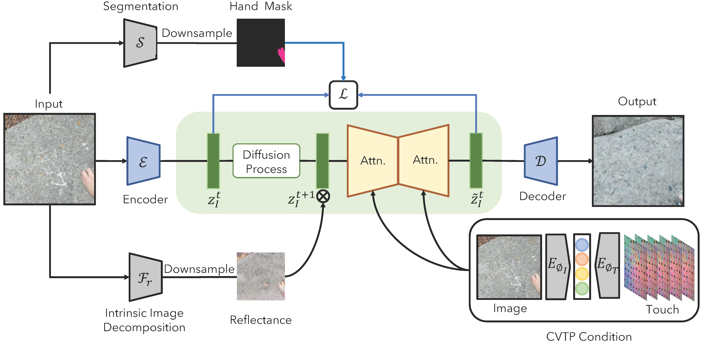

Touch-to-Vision Generation
Tactile-driven Image Stylization
Abstract
An emerging line of work has sought to generate plausible imagery from touch. Existing approaches, however, tackle only narrow aspects of the visuo-tactile synthesis problem, and lag significantly behind the quality of crossmodal synthesis methods in other domains. We draw on recent advances in latent diffusion to create a model for synthesizing images from tactile signals (and vice versa) and apply it to a number of visuo-tactile synthesis tasks. Using this model, we significantly outperform prior work on the tactile-driven stylization problem, i.e., manipulating an image to match a touch signal, and we are the first to successfully generate images from touch without additional sources of information about the scene. We also successfully use our model to address two novel synthesis problems: generating images that do not contain the touch sensor or the hand holding it, and estimating an image's shading from its reflectance and touch.
Visuo-tactile cross-modal generation
We perform cross-modal generation, i.e., generating an image from touch and vice versa, on both in-the-wild Touch and Go dataset and robot-collected dataset VisGel.

Tactile-driven Image Stylization
We restyle the input image using the given touch signal (reference image from scene provided for clarity). We compare our approach to Yang et al. Our approach generates images with higher quality matching more closely to the given tactile signal.
Tactile-driven Shading Estimation
We hypothesize that the tactile signal conveys information about the microgeometry of an image, and thus allows a model to produce more accurate images than a reflectance-to-image model that does not have access to touch.

Touch-to-image Model
We use a latent diffusion model to generate an image of a scene from touch. The touch signal is represented using multiple frames of video from a GelSight sensor. The model uses a segmentation mask to optionally generate only the scene content containing the pressed object (i.e., without a hand or touch sensor). We also optionally condition on reflectance from a scene, in which case the model's generation task requires it to estimate shading
